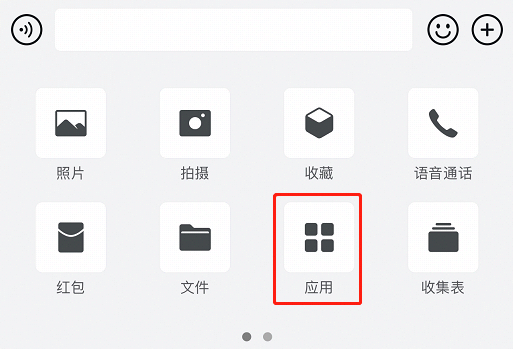
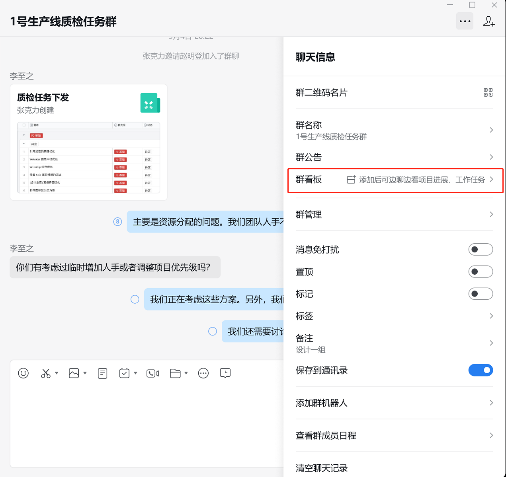
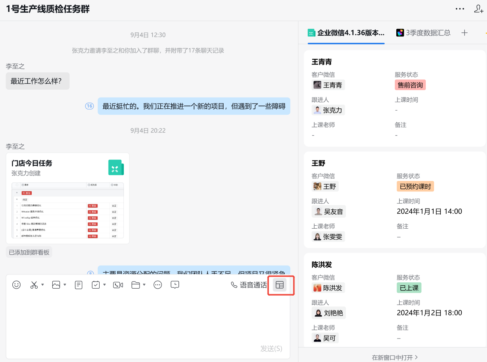
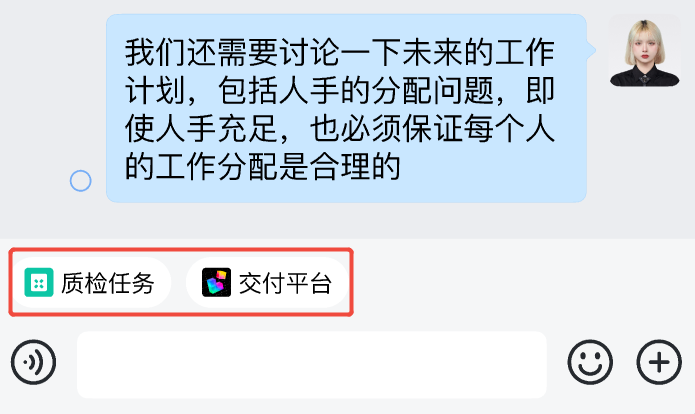
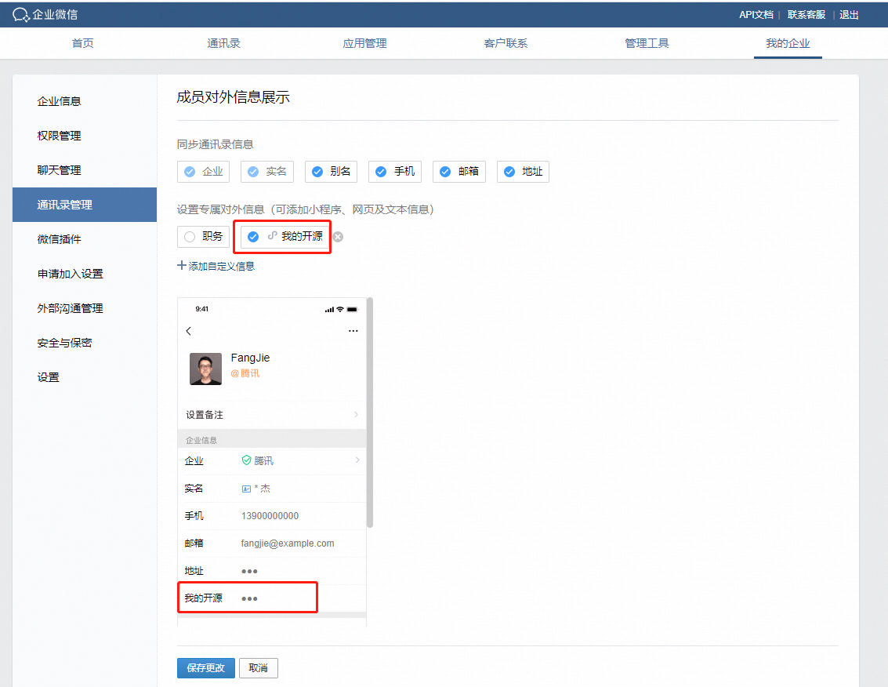

wx.qy.getContext
最后更新：2025/03/26
wx.qy.getContext(Object object)
调用前提：
1. 此接口仅在企业微信3.0.24及以后版本支持，微信端不支持（微信开发者工具也不支持）
2. 必须先调用过wx.qy.login，且session_key未过期，开发者可调用checkSession 检查当前登录态
3. 当前成员必须在应用的可见范围
4. 从企业微信3.1.6版本开始，所有应用皆可调用，包括自建应用与第三方应用
调用该接口可以获得用户是从哪个入口打开页面，从而决定是否可以调用工具栏相关的接口
参数
Object object
| 参数名 | 类型 | 必填 | 说明 |
|---|---|---|---|
| success | Function | 否 | 接口调用成功的回调函数 |
| fail | Function | 否 | 接口调用失败的回调函数 |
| complete | Function | 否 | 接口调用结束的回调函数（调用成功、失败都会执行） |
object.success 回调函数
参数
Object res
| 参数 | 类型 | 说明 |
|---|---|---|
| entry | String | 返回进入小程序的入口类型，目前有normal、contact_profile、single_chat_tools、group_chat_tools、chat_attachment等，详见以下“entry说明” |
| shareTicket | String | 从企业微信3.1.8及以上版本支持，仅从私密消息卡片进入时返回该字段 |
entry 说明
| 值 | 说明 | 支持的最低版本 |
|---|---|---|
| contact_profile | 从联系人详情进入 | 3.0.24 |
| single_chat_tools | 从单聊会话的工具栏进入 | 3.0.24 |
| group_chat_tools | 从群聊会话的工具栏进入 | 3.0.24 |
| chat_attachment | 从会话的聊天附件栏进入 | 3.1.6 |
| single_kf_tools | 从微信客服的工具栏进入 | 3.1.10 |
| chain_single_chat_tools | 从上下游单聊会话的工具栏进入 | 4.0.8 |
| chain_group_chat_tools | 从上下游群聊会话的工具栏进入 | 4.0.8 |
| internal_group_chat_board | 从内部群群看板进入 | 4.1.36 |
| normal | 除以上场景之外进入，例如工作台，聊天会话等 | 3.0.24 |
示例代码：
wx.qy.getContext ({ success: function(res) { var entry = res.entry, //返回进入小程序的入口类型 var shareTicket = res.shareTicket; } })点击复制
附：entry截图说明
1. 联系人详情的入口(注意配置入口是在企业管理端--外部沟通管理--自定义详情页)
配置之后，用户在终端查看外部联系人详情时，入口如下图：
2. 工具栏的入口（单聊或群聊）
3. 聊天附件栏的入口

4. 内部群群看板的入口
配置入口在内部群的聊天信息-群看板（目前仅桌面端支持配置）：

配置之后，桌面端查看入口：

移动端查看入口：

特别注意：成员自定义对外信息的入口进入的，调用getContext返回的是normal（为什么呢？因为这里不涉及客户管理功能，并不能调用客户联系的相关接口），设置入口如下图：
